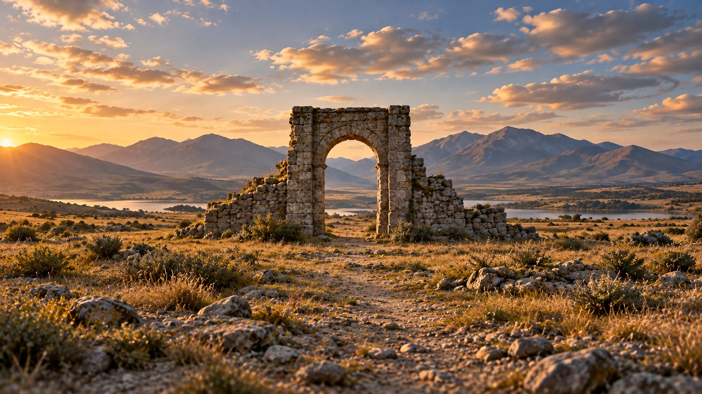

G26 · 중급 · 일반 드론
후반 줌으로 만드는 드론 버티고 효과
디지털 확대 자체와 이동 중 원근 변화가 결합한 효과를 구분하는 법을 배운다.
그림에서 확인할 세 가지석문과 원경을 기준으로 전진과 크롭의 차이를 도해에서 살펴본다.
1석문의 화면 크기
중앙 석문의 높이와 양옆 기둥 폭을 먼저 본다. 이 형태는 이동 영상에서 화면 크기를 비교할 기준이며, 한 장만으로 변화량을 판단할 수는 없다.
2문 안과 문 밖의 거리
석문 안으로 먼 산과 호수가 보인다. 가까운 석문과 먼 능선이 겹치는 위치를 확인하면 이후 이동 영상에서 원근 변화를 어디서 볼지 정할 수 있다.
3가장자리에 남은 여백
좌우 바위와 풀밭, 위쪽 하늘의 여유를 살핀다. 후반 확대를 가정했을 때 석문을 남기면서 어느 주변 정보가 먼저 잘릴지 예상한다.
촬영 설계
촬영을 이렇게 설계한다
먼저 이동이 있는 영상을 고른다
원문은 전진하는 드론 영상과 후반 확대·축소의 결합을 출발점으로 제시한다. 교육 적용에서는 가까운 대상과 먼 배경이 분리되어 보이는 구간을 먼저 고른다.
기준 대상의 크기를 맞춘다
교육 적용에서는 가까운 대상의 화면 크기를 기준으로 후반 확대량을 조절한다. 정지 사진의 확대만으로 같은 원근 변화가 생긴다고 설명하지 않으며 결과를 직접 비교한다.
잘리는 영역을 먼저 확인한다
디지털 확대는 원본 가장자리와 사용 가능한 해상도를 줄인다. 교육 적용에서는 효과의 강도를 올리기 전에 최종 화면비에서 필요한 배경과 대상의 일부가 잘리는지 확인한다.
전진하는 드론 영상에 후반 확대와 축소를 적용하다 발견한 효과를 설명하는 튜토리얼이다.
원본 영상후반 줌으로 만드는 드론 버티고 효과
1. 가까운 대상의 크기
원본에서 기준 대상이 있다면 시작과 끝의 높이를 비교한다. 대상이 함께 커지는 단순 접근과 배경만 달라지는 효과를 구별한다.
2. 배경의 상대 변화
대상의 뒤쪽 건물이나 능선 간격을 관찰한다. 전체 화면 확대와 가까운 대상·먼 배경 사이의 상대 변화를 따로 판단한다.
3. 확대의 대가
화면 가장자리의 사물이 사라지거나 세부가 흐려지는지 확인한다. 효과의 강도와 구도·해상도 손실 사이의 선택을 살핀다.
재생이 제한되면 원본 영상 새 창을 이용하세요.
제작진 설명 · 한국어 요약 번역
전진 영상의 후반 확대에서 표현을 발견하다
발견 과정
번역 요약: Stewart Carroll은 전진하는 드론 영상에 후반 작업의 확대·축소 효과를 적용하다 이 표현을 발견했고, 이를 다듬어 튜토리얼로 만들었다고 설명한다.
미공개 수치
본문만으로 확대 비율이나 키프레임 수치는 확인되지 않는다.
광학 줌 구분
이 사례는 렌즈의 광학 줌을 직접 조작한 G03과 구별해서 읽어야 한다.
Kling 프롬프트단문 인과 체인 · 16:9
내가 직접 만들어 본다
앞으로 다가가며 화각을 넓혀, 가까운 석문의 크기는 그대로인데 먼 산만 작아지며 멀어 보이게 한다.
- S01풀밭 위에 큰 석문이 서 있다.
- S02석문은 화면 중앙에 높게 놓여 있다.
- S03석문 안으로 먼 산과 호수가 보인다.
- S04석문 양옆에는 거친 바위와 풀밭이 있다.
- S05위쪽에는 맑은 하늘이 있다.
- S06드론 시점은 눈높이보다 조금 높은 곳이다.
- S07부드러운 오전 햇빛이 석문의 앞면을 밝힌다.
- S08가로 16:9 화면이다.
[네거티브]
- 석문이 여러 개로 늘어나거나 건물이 생기는 것 금지
- 석문이 한쪽으로 치우치거나 낮아지는 것 금지
- 문 안에 먼 산이나 호수가 없거나 사람이 서 있는 것 금지
- 양옆에 건물이나 길이 생기는 것 금지
- 구름이 많거나 비가 오는 것 금지
- 시점이 땅 높이나 석문 위로 바뀌는 것 금지
- 강한 역광이나 밤처럼 어두워지는 것 금지
- 세로나 정사각형 화면이 되는 것 금지
- S01A large stone gate stands on a meadow.
- S02The gate sits tall in the center of the frame.
- S03A distant mountain and a lake are visible through the gate.
- S04Rough rocks and meadow lie on both sides of the gate.
- S05A clear sky fills the top of the frame.
- S06The drone viewpoint is slightly higher than eye level.
- S07Soft morning sunlight lights the front of the gate.
- S08The frame is horizontal 16:9.
[Negative]
- Do not add more gates or any buildings.
- Do not push the gate to one side or make it lower.
- Do not leave the mountain and lake out of the gate or put people in it.
- Do not add buildings or roads on both sides.
- Do not add heavy clouds or rain.
- Do not move the viewpoint to ground level or above the gate.
- Do not add strong backlight or darken it like night.
- Do not make the frame vertical or square.
- S01영상은 첫 프레임의 구도에서 시작한다.
- S02드론은 석문을 향해 천천히 앞으로 다가간다.
- S03다가가는 동안 화각은 점점 넓어진다.
- S04그래서 석문의 화면 크기는 거의 같게 유지된다.
- S05하지만 석문 안의 먼 산은 점점 작아지며 멀어 보인다.
- S06석문과 산 사이의 거리가 늘어난 것처럼 공간이 길게 늘어난다.
- S07움직임은 일정하고 부드럽다.
- S08영상은 석문이 같은 크기로 중앙에 있고 산이 멀리 물러난 상태에서 끝난다.
- S09석문의 모양과 색, 호수의 위치는 유지된다.
[네거티브]
- 첫 장면과 다른 구도에서 시작하는 것 금지
- 드론이 뒤로 물러나거나 옆으로 도는 것 금지
- 화각이 좁아져 확대되는 것 금지
- 석문이 점점 커지는 것 금지
- 먼 산이 석문과 함께 커지거나 가까워지는 것 금지
- 공간이 찌그러지거나 석문이 휘는 것 금지
- 움직임이 흔들리거나 빨라지는 것 금지
- 석문이 커진 채 끝나거나 산이 가까워진 채 끝나는 것 금지
- 석문의 모양과 색, 호수의 위치가 바뀌는 것 금지
- S01The video starts from the composition of the first frame.
- S02The drone slowly moves forward toward the stone gate.
- S03While moving closer, the field of view gradually widens.
- S04So the size of the gate in the frame stays almost the same.
- S05But the distant mountain inside the gate gradually gets smaller and looks farther away.
- S06The space stretches long, as if the distance between the gate and the mountain has increased.
- S07The movement is steady and smooth.
- S08The video ends with the gate at the same size in the center and the mountain receded far away.
- S09The shape and color of the gate and the position of the lake remain unchanged.
[Negative]
- Do not start from a composition different from the first frame.
- Do not let the drone move backward or circle sideways.
- Do not let the field of view narrow into a zoom-in.
- Do not let the gate grow larger.
- Do not let the distant mountain grow or come closer with the gate.
- Do not let the space crumple or the gate bend.
- Do not let the movement shake or speed up.
- Do not end with the gate enlarged or the mountain closer.
- Do not change the gate's shape or color or the lake's position.
- S01호숫가에 큰 석문이 서 있고 문 안으로 먼 산이 보인다.
- S02영상은 하나의 연속 쇼트다.
- S03석문은 화면에서 같은 크기로 유지된다.
- S04처음 10초 동안 드론이 석문에서 천천히 뒤로 물러난다.
- S05드론이 물러나는 만큼 렌즈는 석문 쪽으로 확대된다.
- S06그래서 석문의 크기는 변하지 않는다.
- S07드론이 물러나기 때문에 문 주변 바위와 풀밭이 넓어진다.
- S08다음 10초 동안 문 안의 먼 산이 문 가까이 다가온다.
- S09먼 산이 커지자 문 안의 공간이 눌려 보인다.
- S10마지막 10초 동안 석문은 계속 같은 크기로 중앙에 남는다.
- S11배경의 원근만 계속 달라진다.
- S12석문의 가장자리는 끝까지 화면 안에 남는다.
[네거티브]
- 석문이 여러 개로 늘어나거나 산이 문 밖으로 치우치는 것 금지
- 중간에 컷이 생기며 장면이 바뀌는 것 금지
- 석문이 점점 커지거나 작아지는 것 금지
- 드론이 오히려 석문 쪽으로 전진하는 것 금지
- 확대 없이 석문이 멀어져 작아지는 것 금지
- 석문이 출렁이듯 크기가 흔들리는 것 금지
- 문 주변의 바위와 풀밭이 그대로 고정된 채 변화가 없는 것 금지
- 먼 산이 오히려 작아지며 멀어지는 것 금지
- 문 안 공간이 깊어지기만 하고 눌림이 없는 것 금지
- 석문이 화면 가장자리로 밀려나는 것 금지
- 석문과 배경이 함께 커지거나 작아지는 것 금지
- 확대 때문에 석문 윗부분이 화면 밖으로 잘리는 것 금지
- S01풀밭 위에 큰 석문이 서 있다.
- S02석문은 화면 중앙에 높게 놓여 있다.
- S03석문 안으로 먼 산과 호수가 보인다.
- S04석문 양옆에는 거친 바위와 풀밭이 있다.
- S05위쪽에는 맑은 하늘이 있다.
- S06드론 시점은 눈높이보다 조금 높은 곳이다.
- S07부드러운 오전 햇빛이 석문의 앞면을 밝힌다.
- S08영상은 가로 16:9의 하나의 연속 쇼트다.
- S09처음 10초 동안 카메라는 거의 움직이지 않고 석문과 먼 산의 관계를 보여 준다.
- S10그래서 관객은 석문의 크기와 산의 크기를 기준으로 기억한다.
- S11다음 10초 동안 드론이 석문을 향해 천천히 앞으로 다가간다.
- S12다가가는 동안 화각은 점점 넓어진다.
- S13그래서 석문의 화면 크기는 거의 같게 유지된다.
- S14하지만 석문 안의 먼 산은 점점 작아지며 멀어 보인다.
- S15마지막 10초 동안 움직임은 같은 속도로 이어진다.
- S16석문과 산 사이의 거리가 늘어난 것처럼 공간이 길게 늘어난다.
- S17영상은 석문이 같은 크기로 중앙에 있고 산이 멀리 물러난 상태에서 끝난다.
- S18움직임은 일정하고 부드럽다.
- S19석문의 모양과 색, 호수의 위치는 유지된다.
[네거티브]
- 석문이 여러 개로 늘어나거나 건물이 생기는 것 금지
- 석문이 한쪽으로 치우치거나 낮아지는 것 금지
- 문 안에 먼 산이나 호수가 없거나 사람이 서 있는 것 금지
- 양옆에 건물이나 길이 생기는 것 금지
- 구름이 많거나 비가 오는 것 금지
- 시점이 땅 높이나 석문 위로 바뀌는 것 금지
- 강한 역광이나 밤처럼 어두워지는 것 금지
- 여러 쇼트로 쪼개지거나 컷이 들어가는 것 금지
- 처음 10초에 카메라가 크게 움직이는 것 금지
- 처음부터 산이 작아지거나 석문이 커지는 것 금지
- 드론이 뒤로 가거나 옆으로 도는 것 금지
- 화각이 좁아져 확대되는 것 금지
- 석문이 점점 커지는 것 금지
- 먼 산이 석문과 함께 커지거나 가까워지는 것 금지
- 마지막 10초에 움직임이 멈추거나 급변하는 것 금지
- 공간이 찌그러지거나 석문이 휘는 것 금지
- 석문이 커진 채 끝나거나 산이 가까워진 채 끝나는 것 금지
- 움직임이 흔들리거나 빨라지는 것 금지
- 석문의 모양과 색, 호수의 위치가 바뀌는 것 금지
- S01A large stone gate stands on a meadow.
- S02The gate sits tall in the center of the frame.
- S03A distant mountain and a lake are visible through the gate.
- S04Rough rocks and meadow lie on both sides of the gate.
- S05A clear sky fills the top of the frame.
- S06The drone viewpoint is slightly higher than eye level.
- S07Soft morning sunlight lights the front of the gate.
- S08The video is one continuous shot in horizontal 16:9.
- S09For the first 10 seconds, the camera barely moves and shows the relationship between the gate and the distant mountain.
- S10So the viewer remembers the size of the gate and the size of the mountain as a reference.
- S11For the next 10 seconds, the drone slowly moves forward toward the stone gate.
- S12While moving closer, the field of view gradually widens.
- S13So the size of the gate in the frame stays almost the same.
- S14But the distant mountain inside the gate gradually gets smaller and looks farther away.
- S15During the last 10 seconds, the movement continues at the same speed.
- S16The space stretches long, as if the distance between the gate and the mountain has increased.
- S17The video ends with the gate at the same size in the center and the mountain receded far away.
- S18The movement is steady and smooth.
- S19The shape and color of the gate and the position of the lake remain unchanged.
[Negative]
- Do not add more gates or any buildings.
- Do not push the gate to one side or make it lower.
- Do not leave the mountain and lake out of the gate or put people in it.
- Do not add buildings or roads on both sides.
- Do not add heavy clouds or rain.
- Do not move the viewpoint to ground level or above the gate.
- Do not add strong backlight or darken it like night.
- Do not split into several shots or add cuts.
- Do not make the camera move much in the first 10 seconds.
- Do not let the mountain shrink or the gate grow from the start.
- Do not let the drone go backward or circle sideways.
- Do not let the field of view narrow into a zoom-in.
- Do not let the gate grow larger.
- Do not let the distant mountain grow or come closer with the gate.
- Do not stop or change the movement abruptly in the last 10 seconds.
- Do not let the space crumple or the gate bend.
- Do not end with the gate enlarged or the mountain closer.
- Do not let the movement shake or speed up.
- Do not change the gate's shape or color or the lake's position.
결과에서 볼 것
- 석문의 화면 크기가 거의 일정하게 유지됐는가
- 석문 안의 먼 산이 작아지며 멀어 보였는가
- 이동으로 생긴 원근 변화와 단순한 확대·축소가 구별되는가